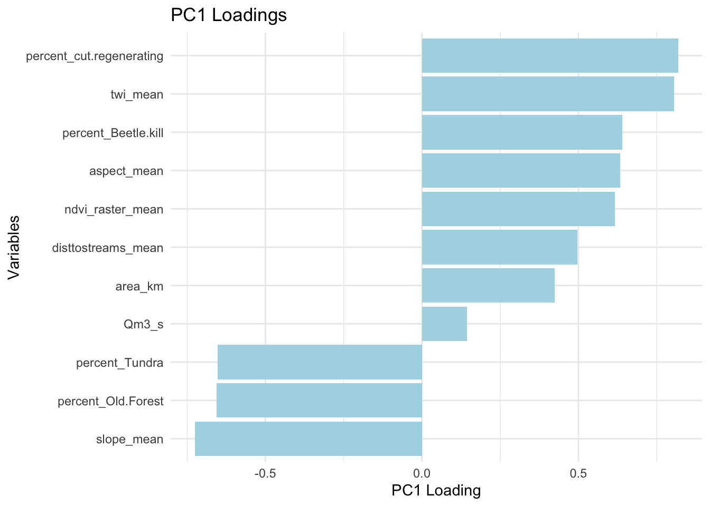
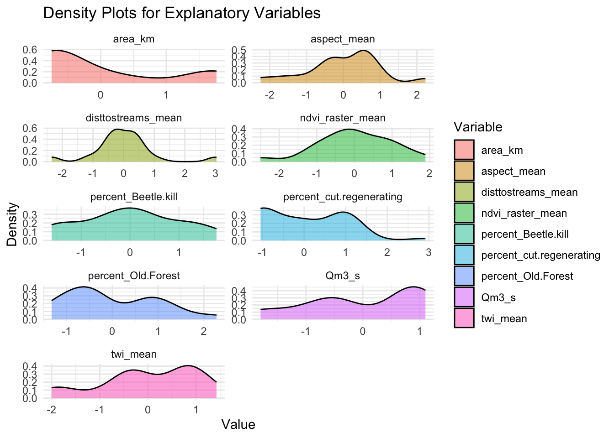

3.8 1.F. PCA All data
3.8.1 1.F.i. All data
Figure 3.17: Figure.
## Eigenvalue Variance_Explained Cumulative_Variance
## comp 1 4.342438811 39.47671647 39.47672
## comp 2 1.886022429 17.14565845 56.62237
## comp 3 1.581504209 14.37731099 70.99969
## comp 4 0.898506305 8.16823914 79.16793
## comp 5 0.764777292 6.95252084 86.12045
## comp 6 0.661707308 6.01552098 92.13597
## comp 7 0.433685986 3.94259987 96.07857
## comp 8 0.225653909 2.05139917 98.12997
## comp 9 0.149323029 1.35748208 99.48745
## comp 10 0.052177182 0.47433802 99.96179
## comp 11 0.004203539 0.03821399 100.00000Although PC1 and PC2 explain a lot of the variance and most pubs focus on these, PC3 contributes a non-trivial amount of variance (14%). Together, the first three components explain the majority of the total variance, which (I think) is a better threshold for interpretation than <50%. Let’s see.
Visualize the PC1 loadings to see what our important drivers are:
 In this case, PC1 might represent a gradient related to DOC lability or stability across the landscape (e.g., a transition from microbial activity-driven DOC production in low slopes, southern aspects, more moist sub-watersheds, to more labile DOC driven by hydrological transport in older forests due to higher slopes, northern aspects and drier sub-watersheds. Subwatersheds with older forests tend to be on higher slopes, northern aspects, which receive less solar radiation (cooler, less microbial activity). These also retain snow for longer, sustaining humic inputs through the falling limb (we might see this in Lexen)? A lot more detail is applied to this below.
…BUT, PCA is unsupervised and doesn’t directly consider the response variable. So how well does PC1 explain the variability of the first PARAFAC component (humic)?.
Let’s look at PC1 in 2-D space by plotting it against our response variable to see how PC1 correlates with the sample fraction of Humic Component1. We can get a sense of the strength and direction of the relationship:  Meh.
Explore correlations between the first 3 PCs and the response variable:
## [,1]
## Dim.1 0.4673675
## Dim.2 -0.1587496
## Dim.3 0.1628407Lets fit a linear model with the first few components as predictors:
##
## Call:
## lm(formula = relative_load_comp_1 ~ Dim.1 + Dim.2 + Dim.3, data = pca_scores)
##
## Residuals:
## Min 1Q Median 3Q Max
## -0.30789 -0.03662 0.01534 0.05326 0.31390
##
## Coefficients:
## Estimate Std. Error t value Pr(>|t|)
## (Intercept) 0.598080 0.005839 102.429 < 2e-16 ***
## Dim.1 0.023549 0.002802 8.404 4.08e-15 ***
## Dim.2 -0.012137 0.004252 -2.855 0.00469 **
## Dim.3 0.013596 0.004643 2.928 0.00374 **
## ---
## Signif. codes: 0 '***' 0.001 '**' 0.01 '*' 0.05 '.' 0.1 ' ' 1
##
## Residual standard error: 0.09046 on 236 degrees of freedom
## Multiple R-squared: 0.2702, Adjusted R-squared: 0.2609
## F-statistic: 29.12 on 3 and 236 DF, p-value: 4.698e-16Conclusions Component1: The small coefficients, combined with the relatively low R-squared value, suggest that even though the relationships are significant, they might not be strong enough to drive substantial changes in relative_load_comp_1. I can increase the amount of variability by remove more variables from the PCA, but this still does not drastically improve the relationship between PC1 and PARAFAC component 1.
Let’s look at Components 2 and 3 in the same fashion. It could be that Component 1 is driven by the fractions of 2 and 3…?
COMPONENT 2

Explore correlations between the first 3 PCs and the response variable:
## [,1]
## Dim.1 0.46462289
## Dim.2 -0.04673344
## Dim.3 0.31533479Lets fit a linear model with the first few components as predictors:
##
## Call:
## lm(formula = relative_load_comp_2 ~ Dim.1 + Dim.2 + Dim.3, data = pca_scores)
##
## Residuals:
## Min 1Q Median 3Q Max
## -0.122254 -0.014929 0.004666 0.024158 0.070329
##
## Coefficients:
## Estimate Std. Error t value Pr(>|t|)
## (Intercept) 0.185939 0.002188 84.991 < 2e-16 ***
## Dim.1 0.009071 0.001050 8.640 8.62e-16 ***
## Dim.2 -0.001384 0.001593 -0.869 0.386
## Dim.3 0.010201 0.001740 5.864 1.52e-08 ***
## ---
## Signif. codes: 0 '***' 0.001 '**' 0.01 '*' 0.05 '.' 0.1 ' ' 1
##
## Residual standard error: 0.03389 on 236 degrees of freedom
## Multiple R-squared: 0.3175, Adjusted R-squared: 0.3088
## F-statistic: 36.59 on 3 and 236 DF, p-value: < 2.2e-16COMPONENT 3

Explore correlations between the first 3 PCs and the response variable:
## [,1]
## Dim.1 -0.4988821
## Dim.2 0.1362872
## Dim.3 -0.2196376Lets fit a linear model with the first few components as predictors:
##
## Call:
## lm(formula = relative_load_comp_3 ~ Dim.1 + Dim.2 + Dim.3, data = pca_scores)
##
## Residuals:
## Min 1Q Median 3Q Max
## -0.29205 -0.06526 -0.02330 0.04171 0.39464
##
## Coefficients:
## Estimate Std. Error t value Pr(>|t|)
## (Intercept) 0.215981 0.007337 29.438 < 2e-16 ***
## Dim.1 -0.032619 0.003521 -9.265 < 2e-16 ***
## Dim.2 0.013522 0.005342 2.531 0.012 *
## Dim.3 -0.023797 0.005834 -4.079 6.19e-05 ***
## ---
## Signif. codes: 0 '***' 0.001 '**' 0.01 '*' 0.05 '.' 0.1 ' ' 1
##
## Residual standard error: 0.1137 on 236 degrees of freedom
## Multiple R-squared: 0.3157, Adjusted R-squared: 0.307
## F-statistic: 36.29 on 3 and 236 DF, p-value: < 2.2e-16Not surprisingly, the coefficients are similar among humic components and while similar in absolute value, opposite for the protein-like component.
Save this:
Interpreting loadings for PC1:
Negative Loadings
Examples, clarifications:
percent_Old.Forest as measured by a landcover classificaiton model (hand corrected Random Forest)
percent_11.15 is the percent of the each subwatershed containing by forest btwn 11 and 15m tall as measured pixel counts of the canopy height model. These trees are ‘old’ but not the rare ancients found in the riparian valley.
A negative loading in PC1 means that higher values of these variables are associated with lower values of the principal component (PC1), which ‘represents a particular combination of the variation explained by the dataset’ or in my words, a regression line that best fits the multidimensional space created by all of the variables. I think this means these are related to reduced Component1 fractions. Again, this is counter to Fegel results and the logic that the older forests would contain more recalcitrant sources of DOC. However, higher slopes and more tundra-covered areas also may negatively influence Component 1 humic fractions. This makes sense, as DOM is likely hydrologically transported faster in these conditions, with less time or material for microbial activity, transporting DOC while it is still labile.
Positive Loadings:
On the other hand, positive loadings mean that higher values of these variables contribute positively to PC1.
Top examples, clarification:
aspect higher aspect values (180 to 270) represent south and west aspects, 0-90 represent north and east. Previous studies that conclude that microbial decomposition of soil organic matter and enzyme activities associated with soil C, N, and P cycling increased with increasing temperature: Liu et al 2021 in Effects of natural vegetation restoration on DOM..and they cite: Min et al., 2019; Nazaries et al., 2015; Pang et al., 2015.
disttostreams_mean is derived from a whitebox raster that calculates the downslope distance to the nearest downslope stream cell. This is assumed to give us a relative idea of the retention time of allochthonous water. Larger distances to the stream mean potentially more time for microbial activity to improve recalcitrance before DOM enters the stream channel.
percent_cut.regenerating is the percent of subwatershed area covered by ‘cut’ plots. Thse are potentially areas of ‘newer’ forests, and in Deadhorse, many of these appear similar to meadows. We might expect a decreased humic component with regenerating forest as they can have lower litter production, shallow root systems, leading to decreased input of humic subtances (notes from a Tim meeting). However, we might be at an older stage of succession at this point (40+ years post harvest at this point). Roots are deeper, litter and deadwood has likely had time to accumulate in these plots. This can enhance complex, recalcitrant carbon compounds, like our humic Component1.
percent_Beetle.kill Similar to above, beetle kill leaves the deadwood of old trees in place. We might expect these to be a source of recalcitrant carbon. TWI is arguably important in the fraction of humic components. Like distancetostreams, is likely an indication of the allochthonous water retention. In other words, increased water retention in areas with higher wetness indices, where DOM originating from surrounding soils (allochthonous DOM) can remain for extended periods may allow for greater microbial processing of DOM, leading to the accumulation of more recalcitrant, humic Components before the DOM is transported into the stream channel.